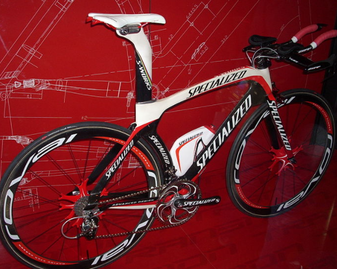

Матеріал з Вікіпедії — вільної енциклопедії.
Specialized Bicycle Components (більш відома як Specialized) — американська компанія-виробник велосипедів та інвентар для велосипедного спорту. Є четвертою за величиною велосипедної компанією США і провідним інноватором в велосипедної галузі[3]. Заснована Майком Синьярдом (Mike Sinyard) в 1974 році. Штаб-квартира знаходиться в місті Морган-Хілл , штат Каліфорнія. Компанія випускає обладнання для ряду велосипедних дисциплін: маунтинбайку, шосейного велоспорту,BMX, велокросу , а також гібридні, дорожні, дитячі велосипеди, електровелосипеди.
Засновник компанії Майк Синьярд захопився велосипедами у віці семи років, коли батько купив йому старий жіночий велосипед. Байк був у поганому стані і батько Майка, який працював механіком і відмінно розбирався в техніці, разом з сином зайнявся його відновленням. Згодом його батько став скуповувати старі велосипеди і лагодити їх, після чого Майк займався фарбуванням, а потім їх продавали на місцевому блошиному ринку[4]. З часом захоплення Майка велосипедами зростало під час навчання в коледжі Сан-Дієго він практично щодня добирався на своєму байку 7—8 миль до місця навчання[5], а також продовжував займатися ремонтом старих велосипедів, продаючи їх через оголошення в газетах. Кинувши навчання, Майк продав свій мікроавтобус Фольксваген за 1500 доларів і на виручені кошти влаштував велотур по Європі, однією з цілей якого був пошук недоступного на американському ринку обладнання для свого велосипеда[6][7]. У Мілані він познайомився з дівчиною, влаштував йому зустріч з італійськими виробниками шосейних велосипедів і велосипедних компонентів. Майк був здивований, дізнавшись, що компанії Campagnolo і Cinelli згодні постачати йому компоненти для продажу в США, де гостро відчувалася нестача високоякісної велосипедного обладнання. Закупивши компоненти на решту з продажу мікроавтобуса гроші, Синьярд повернувся в США. У Каліфорнії він за 60 доларів в місяць орендував під склад трейлер, склав рукописний каталог товарів і почав об'їжджати з ним місцеві веломагазини. Розпродавши обладнання за 1'300 доларів при початкових витратах у 1100 доларів, Майк уклав, що попит на якісні компоненти не задоволений і успішне починання варто продовжити, але у нього не було достатньо грошей, щоб замовляти їх безпосередньо з Італії. Тоді він зумів переконати замовників працювати по передоплаті, заробляючи на підвищенні закупівельної ціни на 10-15 відсотків. Ця виявилася вдалою схема і послужила початком компанії. В якості її назви був обраний термін Specialized, який, як зазначає Майк, в Італії означає відданість й залученість до нього. За 1974 рік оборот компанії склав 64 тисячі доларів, а в наступному році досяг 128 тисяч, при цьому при такій схемі роботи Майк практично не мав витрат.
Успішно розпочавши бізнес, у 1976 році Майк вирішив організувати власне виробництво. Він не був задоволений якістю імпортованих з Італії шин. Піс ля року роботи Синьярд представив на ринок власний продукт — шини Specialized для туристичних велосипедів. За словами Майка, це був справжній прорив, так як компанія стала чимось більшим, ніж просто імпортером — вона стала інноватором. Підтверджуючи прагнення запроваджувати новітні технології, в 1978 році Specialized першими на велосипедному ринку випустили фолдингові клинчерні шини Turbo з бортами з кевларового троса. В цьому році річний оборот компанії досяг мільйона доларів, що дозволило Майку Синьярду перейти до випуску власних моделей велосипедів. Перша з них, Allez, була представлена в 1979 році і призначалася для шосейних перегонів. Друга модель дістала назву Sequoia і була оснащена туристичної рамою. Рами Specialized, як і шини, що були виготовлені на замовлення в Японії, і, як зазначає сам Майк, він був воістину натхненний чудовою якістю японського виробництва.
В кінці 70-х років в Каліфорнії набирало популярність нове захоплення — велосипедне катання в горах, в основному швидкісний спуск. Для такого роду захоплення абсолютно не підходили традиційні шосейні велосипеди з вузькими гладкими шинами, і любителям доводилося використовувати раритетні моделі 30-40-х років з широкими покришками. Зрослий інтерес привів до створення велосипедів, призначених виключно для катання в горах, але всі вони виготовлялися за індивідуальними замовленнями, були «кастомними».[8] Одним з перших їх творців був Тому Річі (Tom Ritchey), після знайомства з яким Майк Синьярд і звернув увагу на ще дивовижні гірські велосипеди.
Велосипед Specialized Stumpjumper, модель 2008 року
якому на той момент не було навіть якоїсь загальноприйнятої екіпіровки.

Рама Stumpjumper була виконана із сталі, звареної по технології TIG. Тім Нінан планував використовувати вузлову паяну раму, але дану технологію вдалося застосувати тільки в наступних модифікаціях велосипеда. Конструкція виноса керма була запозичена у BMX, керма — у мотоцикла компанії Magura. Велосипед отримав просту, але функціональну пятнадцятишвидкісну систему передач Suntour ARX GT, розроблену, як і багато інші компоненти Stumpjumper, для шосейних велосипедів. Гальмівна система була гібридом із запозичених у туристичних велосипедів кантиліверних гальм компанії Mafac і ручок café-racer для гоночних мотоциклів. Від туристичних моделей Stumpjumper отримав систему провідних зірок TA Cyclotourist, не призначену для тривалого використання на дорогах без твердого покриття, через що були нерідкі випадки її поломок. Покришки використовувалися власного виробництва компанії Specialized. Велосипед важив близько 14 кілограм.
В цілому Stumpjumper виявився надзвичайно успішною моделлю, багато в чому зробила вплив на становлення маунтинбайку як дисципліни. Про його важливість говорить і те, що оригінальна модель Stumpjumper виставлена у Смітсонівському інституті у Вашингтоні.
Зростання продажів дозволив Specialized в 1982 році змінити займаний ними склад в Сан-Дієго на набагато більшу приміщення в містечку Морган-Хілл. Новий офіс мав загальну площу приблизно в 5,5 тисяч квадратних метрів, а крім того, навколо нього розташовувалося безліч підходящих для велосипедного катання трас. У 1983 році компанія створює першу у світі професійну гоночну маунтінбайк-команду. Спонсоровані Specialized спортсмени не тільки рекламували бренд власними перемогами, але і займалися обкаткою нових моделей перед випуском на споживчий ринок, що дозволяло усунути більшість недоліків. Велосипед Specialized Epic столичної поліції Вашингтона У 1988 році заслуги Майка Синьярда були відзначені включенням його до заснований в тому ж році «Зал слави і музей маунтинбайку»[10]. В наступному році Specialized випускає на ринок перший доступний масовому споживачеві гірський велосипед з рамою з вуглецевого волокна, що отримав назву Epic. У цей же період компанія, стурбована даними про те, що тривалий катання на велосипеді може призвести до проблем з потенцією, намагається вирішити цю проблему. У співпраці з ученими в галузі медицини Specialized починає виробництво нового виду велосипедних сідел — Body Geometry, сконструйованих так, щоб перенести основне навантаження з області промежини велосипедиста на кістки тазу. У 1990 році почалася знаменита рекламна кампанія Specialized, розглянута багатьма як виходить за рамки рекламної етики і порушує дух закону про недоторканність приватного життя. Specialized придбали фотографію Михайла Горбачова і змінили її так, що Горбачов виявився одягнений у форму радянської велосипедної команди, тримав у руках велошолом Specialized, а його лунина було стала нагадувати символ компанії. Підпис під фотографією свідчила: «Містер Горбачов на велосипеді Specialized „Sirrus“». Подібна вільність обґрунтовувалася тим, що в той час радянська велокоманда використовувала шоломи Specialized[3].
У 1990-ті роки компанія зіткнулася з підвищенням конкуренції на велосипедному ринку, при цьому продажі залишалися на колишньому рівні або навіть зменшувались. Крім того, Specialized відчувала проблеми з менеджментом і поступово стала втрачати частку на ринку на користь більш успішних компаній, таких як Trek[en] і Schwinn[en], які в цей період не поступалися Specialized в технологіях.
У 1995 році, бажаючи підвищити продажі, компанія під брендом Full Force почала випуск дешевих гірських велосипедів і продаж їх через мережеві магазини спортивного обладнання. Цей крок викликав серйозне невдоволення власників спеціалізованих веломагазинів, які раніше були основним майданчиком для продажу велосипедів Specialized і ставилися до компанії лояльно, а тепер втрачали клієнтів. Майк Синьярд наполягав на тому, що покупці мережевих магазинів все одно не стали б купувати високоякісний товар, що надається веломагазинами, тому цей крок компанії Specialized був виправданий. Продаючи дешеві байки він розраховував залучити більш широке коло людей до захоплення велосипедом, а вже потім вони б самі прийшли в спеціалізовані веломагазини для покупки якісних компонентів. Незважаючи на це, багато хто дилери Specialized були розчаровані, у зв'язку з ніж через два роки після старту серія Full Force була знята з виробництва, а Майк написав офіційного листа з вибаченнями всім дилерам компанії.
Незважаючи на невдачу з Full Force, Specialized продовжили спроби збільшити продажі, почавши випуск велошоломів, пляшок для води і іншої екіпіровки. Спільно з компанією Dupont було організовано виробництво ультралегких композитних коліс. Specialized були настільки впевнені в перевазі їх нових коліс, що оголосили нагороду в п'ять тисяч доларів тому виробнику, який зуміє випустити велосипедні колеса, що перевершують їх продукцію по аеродинамічним характеристикам. Тим не менш, до кінця 1996 року продажі компанії знизилися на 30 %. За словами Синьярда, Specialized були «в декількох сотнях доларів від банкрутства». Ситуація стала поліпшуватися тільки до кінця десятиліття.
У 2001 році тайванська компанія Merida, другий за величиною виробник автомобілів у світі, придбала 49% акцій Specialized за 30 мільйонів доларів. Майк Синьярд, що зберіг статус керівника і найбільшого акціонера компанії, пояснює цей крок необхідністю залучити додаткові фінансові кошти для досягнення довгострокових цілей компанії щодо активізації продажів, підтримки незалежних продавців, продовження націленості на новітні розробки та розширенню експансії на європейський ринок[11].
У 2009 році почалося плідне співробітництво Specialized з командою "формули-1" Макларен, а саме з їх дослідним відділом Mclaren Applied Technologies[12] . Метою співпраці стало створення найшвидшого велосипеда, допущеного до змагань Міжнародним союзом велосипедистів[13]. Розробляється велосипед повинен був поєднувати в собі швидкість недопущенного Союзом Shiv з надійністю і легкістю Tarmac[14]. За основу була обрана нова модель S-Works Venge, яку при співпраці з Макларен вдалося поліпшити за рахунок збільшення надійності і зниження ваги на 15 %[15].
По мірі поширення інтернету створення та наповнення офіційного сайту ставало для Specialized все більш важливим завданням. Компанія розглядала сайт та інтернет в цілому як прекрасну можливість розширити популярність бренду, підвищити його впізнаваність і тісніше згуртувати покупців велосипедів з їх виробником. Якщо клієнт відправляє Specialized електронний лист, то отримує не стандартний відповідь на бланку компанії, а відповідь, у якому буде вказано ім'я конкретного співробітника, що показує покупцеві, що він має справу з реальною людиною, що враховує його інтереси. При цьому сайті не служить майданчиком для продажу продукції, яку можливо придбати тільки через офіційних дилерів Specialized. Така незвичайна позиція є свідомою політикою компанії, спрямованої на захист інтересів веломагазинів, так і на захист покупців від контрафактної продукції[16].
Specialized є провідним інноватором в велосипедної галузі. Це відображено, зокрема, в девізі компанії — Innovate or Die!, тобто Запроваджувати інновації або померти!». На сайті Specialized відзначається ряд найбільш значущих актуальних нововведень компанії:
У 2011 році Specialized представили команду Global Freeride, створену з метою домогтися домінування в світі фрірайду[30]. До неї увійшли такі значущі спортсмени, як Даррен Берреклот, Метт Хантер і Мартін Седерстрем, пізніше також приєднайся Денні Дерс, Майк Монтгомері і Стів Вудвард[31]. У 2013 році компанія оголосила про створення ендуро-команди Specialized Racing Enduro у складі Кертіса Кіна і Аннеке Биртен, які виступають на елосипедах S-Works Enduro і S-Works Stumpjumper[32].
Продовжує успішний виступ у Кубку світу з крос-кантрі команда Specialized Racing: XC MTB, в сезоні 2013 року за яку виступали олімпійський чемпіон 2012 року Ярослав Кульхави, багаторазовий переможець чемпіонату Японії Кохі Ямамото, триразовий чемпіон США Тодд Веллс, п'ята на чемпіонаті США Лео Девідсон, а також перспективна молода гонщиця з Чехії Тереза Хурикова. У 2013 році спортсмени виступали на твентинайнерах S-Works Epic і S-Works Fate[33].
Після низки невдач середини 1990-х років компанія почала співпрацю з виробником напоїв Mountain Dew, спільно з яким була створена професійна команда Mountain Dew Specialized Team і розпочата програма підтримай BMX, включала будівництво громадських трас в Нью-Йорку, Лос-Анджелесі, Чикаго та Маямі.
В кінці 1990-х років Specialized починає працювати і з шосейними велогонщиками, зокрема зі знаменитим італійцем Маріо Чиполлини. У 2010 році на велосипеді Specialized Roubaix перемогу в гонці Париж — Рубе здобув швейцарець Фабіан Канчеллара, який показав також найкращий час на велосипеді Specialized Shiv на чемпіонаті світу з шосейних гонок з роздільним стартом. У тому ж році на Тур де Франс обидва переможця, дискваліфікований за підсумками допінг-проби Альберто Контадор і Анді Шлек, використовували велосипеди Specialized Tarmac. В сезоні 2011 року на велосипеді Specialized Venge брав участь у змаганнях один з найсильніших спринтерів в шосейних гонках Марк Кавендіш. У різний час продукцію Specialized використовували професійні шосейні велокоманди, в тому числі Festina, Gerolsteiner, Omega Pharma-Quick Step, Team Saxo-Tinkoff, Астана і Specialized Team-lululemon.
У сезоні 2013 року на велосипедах Specialized виступало три професійні команди світового туру UCI: Астана[34], Omega Pharma-Quick Step[35] і Team Saxo-Tinkoff[36]. Ці ж команди спонсоруються Specialized і в сезоні 2014 року.
Продукція Specialized поділяється на три категорії: екіпірування для велосипедного спорту, велосипедне обладнання і безпосередньо самі велосипеди. Серед велосипедів, які випускає компанія, є моделі практично всіх основних видів велосипедів: від професійних шосейних і гірських до аматорських прогулянкових, дитячих і навіть електровелосипедів.
Велосипедне обладнання Specialized представлено покришками для гірських, шосейних і дорожніх велосипедів; велосипедними камерами; сідлами, вирощеними за технологією Body Geometry з урахуванням особливостей анатомії людини; колесами серії Roval для різних типів велосипедів; пляшками для пиття і кріпленнями для них; різними велокомпонентами; велокомп'ютерами і велонасосами..[37]
Серед екіпірування, яке випускає компанія, є шоломи для різних дисциплін велоспорту, велосипедне взуття та одяг (шапочки, кепки, куртки, джерсі, рукавички, трико, шорти, шкарпетки) і сумки.[38]
Модельний ряд велосипедів 2014 року розділений на сім категорій: гірські, шосейні, гібридні, електровелосипеди, BMX/дьорт велосипеди, дитячі та дорожні велосипеди. В залежності від спортивної дисципліни велосипеди поділяються на типи, при цьому кожна модель випускається в декількох варіантах в залежності, в першу чергу, від комплектації.[39]